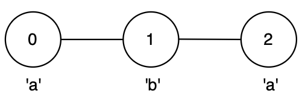
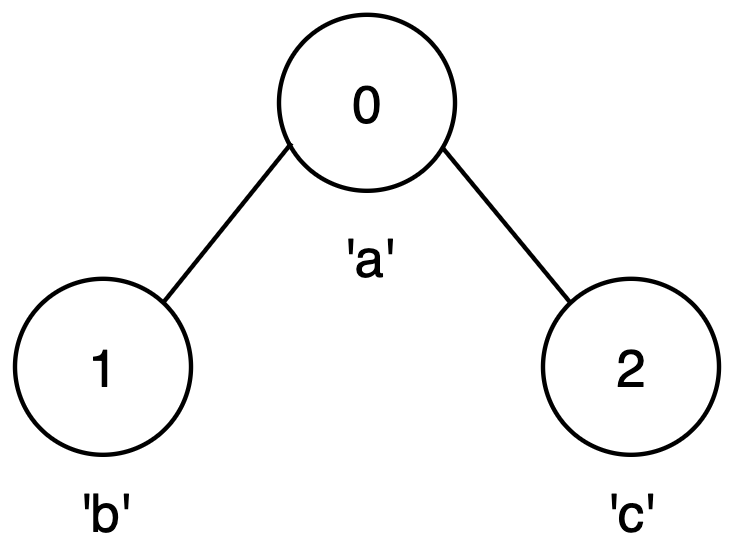
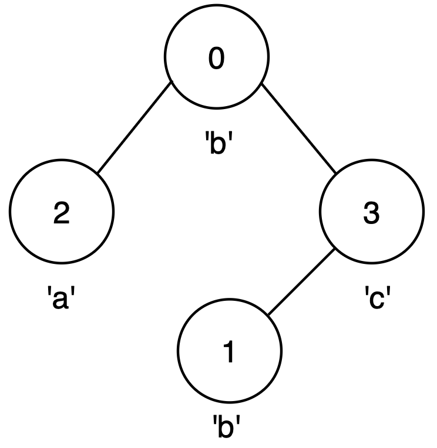

| Category | Difficulty | Likes | Dislikes |
|---|---|---|---|
| Algorithms | Hard | 56 | 5 |
string | dynamic-programming | bit-manipulation | graph | bitmask
You are given an integer n and an undirected graph with n nodes labeled from 0 to n - 1 and a 2D array edges, where edges[i] = [ui, vi] indicates an edge between nodes ui and vi.
You are also given a string label of length n, where label[i] is the character associated with node i.
You may start at any node and move to any adjacent node, visiting each node at most once.
Return the maximum possible length of a palindrome that can be formed by visiting a set of unique nodes along a valid path.
Example 1:
Input: n = 3, edges = [[0,1],[1,2]], label = "aba"
Output: 3
Explanation:

0 → 1 → 2 forming string "aba".Example 2:
Input: n = 3, edges = [[0,1],[0,2]], label = "abc"
Output: 1
Explanation:

Example 3:
Input: n = 4, edges = [[0,2],[0,3],[3,1]], label = "bbac"
Output: 3
Explanation:

0 → 3 → 1, forming string "bcb".
Constraints:
1 <= n <= 14n - 1 <= edges.length <= n * (n - 1) / 2edges[i] == [ui, vi]0 <= ui, vi <= n - 1ui != vilabel.length == nlabel consists of lowercase English letters.